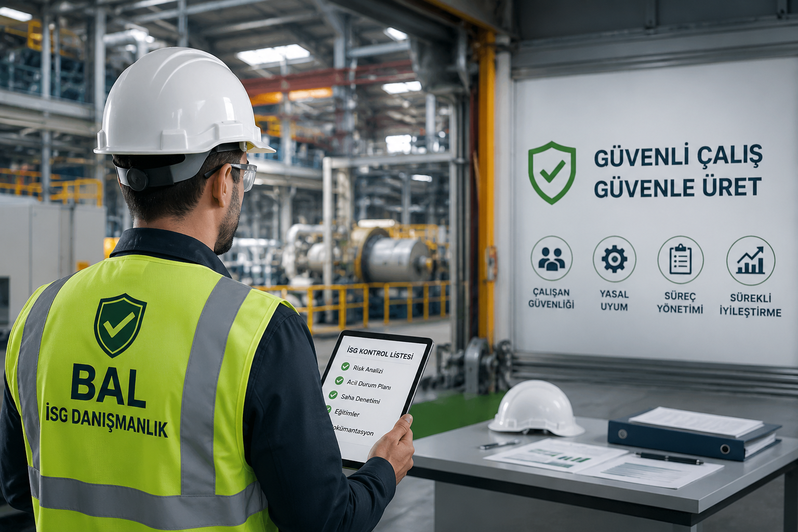

İş sağlığı ve güvenliği danışmanlığı, risk analizi, saha denetimi, eğitim ve yasal dökümantasyon süreçlerinde kurumsal işletmelere profesyonel destek sağlıyoruz.
Kurumsal Firma
Tamamlanan Denetim
Verilen İSG Eğitimi
Hazırlanan Döküman
İş yerlerinde güvenli çalışma kültürü oluşturmak, yasal yükümlülükleri eksiksiz yönetmek ve operasyonel riskleri minimize etmek için profesyonel hizmet sunuyoruz.
İşletmenize özgü risk analizleri ışığında, İSG süreçlerini yasal mevzuatlara tam uyumlu şekilde tasarlıyor, dijital takip sistemlerimizle uçtan uca yönetiyor ve stratejik raporlamalar sunuyoruz.
Çalışan bağlılığını ve güvenlik kültürünü artırmaya yönelik; interaktif temel İSG, teknik uzmanlık ve uygulamalı acil durum simülasyonlarını kapsayan sertifikalı eğitim programları yürütüyoruz.
Potansiyel tehlikeleri proaktif bir yaklaşımla tespit ederek; operasyonel sürekliliği koruyan, risk skorlarını minimize eden ve sürdürülebilirliği temel alan stratejik aksiyon planları geliştiriyoruz.
Yangın, doğal afet ve endüstriyel kriz anlarında can ve mal güvenliğini en üst düzeyde korumak amacıyla; dinamik tahliye senaryoları ve kapsamlı acil durum müdahale protokolleri hazırlıyoruz.
İşletmenizin İSG hafızasını oluşturacak form, talimat ve yasal kayıt süreçlerini; denetimlere her an hazır, güncel mevzuatla entegre ve sistematik bir dokümantasyon yapısıyla yönetiyoruz.
Mobil operasyonlarınızda riskleri minimize etmek adına; araç, sürücü ve saha güvenliğini kapsayan teknolojik izleme çözümleri ve operasyonel denetim mekanizmaları ile maksimum sürüş güvenliği sağlıyoruz.
İşletmelerin hem yasal uyumluluğunu hem de güvenli çalışma ortamını güçlendiren profesyonel bir süreç yönetimi sunuyoruz.
İSG mevzuatına uygun süreç yönetimi ile işletmenizin yasal sorumluluklarını takip ederiz.
Alanında deneyimli ekip ile profesyonel danışmanlık ve uygulama desteği sağlarız.
Riskleri azaltır, iş gücü kaybını düşürür ve işletme verimliliğini artırırız.
Döküman, eğitim ve denetim süreçlerini düzenli yöneterek zaman ve maliyet avantajı sağlar.
Güvenli, sağlıklı ve sürdürülebilir iş ortamı ile kurumsal prestijinizi güçlendiririz.
Sadece belge değil, işletme içinde kalıcı güvenlik kültürü oluşturmayı hedefleriz.
BAL İSG Danışmanlık ve Dökümantasyon Hizmetleri olarak, işletmelerin yasal yükümlülüklerini eksiksiz yerine getirmesi ve çalışan güvenliğini en üst seviyeye taşıması için uçtan uca profesyonel çözümler sunuyoruz.
İş yerinizin ihtiyaçlarını analiz ederek uygulanabilir, takip edilebilir ve sürekli geliştirilebilir bir İSG sistemi oluşturuyoruz.
“Mevcut durum analizi (Gap Analysis), yasal mevzuata uyum denetimi ve iş yerine özgü tehlike kaynaklarının yerinde tespiti.”
“L-Tipi veya Fine-Kinney metodolojileri ile risk değerlendirmesi; acil durum eylem planlarının ve yıllık eğitim/çalışma programlarının dijitalizasyonu.”
“İSG kurullarının tesisi, kişisel koruyucu donanım (KKD) yönetimi ve interaktif teknik eğitimlerle güvenlik kültürünün tüm organizasyona yayılması.”
“Periyodik kontroller, ramak kala raporlama sistemleri ve iç denetim çıktılarıyla sürecin PDÖK (Planla-Uygula-Kontrol Et-Önlem Al) döngüsünde mükemmelleştirilmesi.”
6331 sayılı İş Sağlığı ve Güvenliği Kanunu’na göre;
TÜM İŞYERLERİ, tehlike sınıfına ve çalışan sayısına bakılmaksızın İSG hizmeti almak zorundadır.
Bu kapsamda işverenler;
Bu hizmetler; işyerinde görevlendirme ile, dışarıdan bireysel olarak veya OSGB (Ortak Sağlık Güvenlik Birimi) aracılığıyla sağlanabilir.

BAL İSG; işletmelerin iş sağlığı ve güvenliği, personel süreçleri ve yasal dokümantasyon ihtiyaçlarına profesyonel danışmanlık hizmetleri sunmaktadır.
Tersane ve ağır sanayi sahalarında edinilmiş saha deneyimiyle;
İşletmelerin yasal süreçlerini güvenli, sürdürülebilir ve profesyonel şekilde yönetiyoruz.
İşletmelerin yalnızca evrak değil; aynı zamanda güvenli, düzenli ve yasal uyumlu çalışma sistemi oluşturmasına katkı sağlamaktır.
Çalışanların farkındalığını artırmak ve iş yerinde güvenli davranış kültürü oluşturmak için çeşitli eğitim içerikleri sunuyoruz.
İşverenlerin en çok merak ettiği İSG süreçleri, yasal zorunluluklar ve danışmanlık hizmetleri hakkında sık sorulan sorular.
Firmanız için profesyonel İSG danışmanlığı ve dökümantasyon desteği alın.